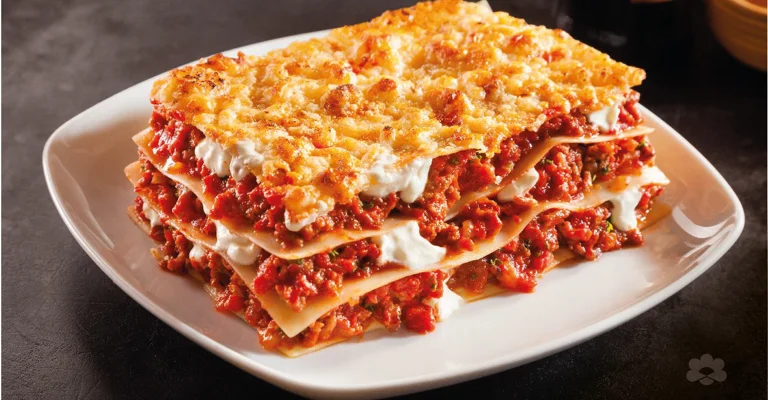

Lasagna

Description
This lasagna recipe is courtesy of the Foodbank in Australia.
Serves 6 and takes 1 hour and 15 minutes to prepare and cook.
Ingredients
- 1 zucchini (grated)
- 2x 400g canned crushed tomatoes
- 2 tablespoons dried oregano
- 1 teaspoon dried basil
- ½ teaspoon dried rosemary
- 250g lasagne sheets
- 2 cups grated cheese
- 2 teaspoons canola oil
- 500g beef mince
- 1 onion (diced)
- 1 carrot (finely chopped)
- 100g can tomato paste
Steps
- Pre heat oven to 180°C.
-
Wash and dry vegetables thoroughly. To do this rinse
vegetables well with cool water, being sure to remove
any dirt or residue. Pat dry using a clean paper towel or cloth.
- Peel the onion and dice finely.
-
Heat oil in a saucepan and add the onion, cook until browned.
-
Add mince to the saucepan, stirring occasionally. Cook until
browned, then add herbs.
-
Add crushed tomato and tomato paste to the saucepan and stir
to combine. Simmer for 15 minutes, stirring occasionally.
-
Grease a large baking dish and line the base with a layer of
lasagna sheets.
-
Pour one third of the mince mixture on top of lasagne sheets
and sprinkle approximately ½ a cup of grated cheese on top.
-
Continue to layer the lasagne sheets, mince mixture and
grated cheese until mince is used up.
-
Finish with a layer of lasagne sheets on top and sprinkle
with cheese.
- Cover with aluminium foil and bake for 45 minutes.
-
Remove foil and bake for an additional 10-15 minutes to brown
the top.
Home